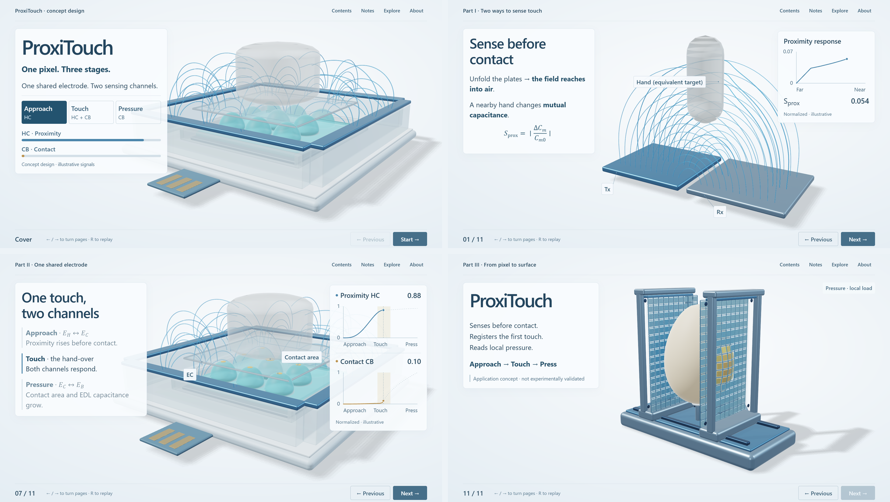

ProxiTouch
rendered previews
Every image is a real Chromium / WebGL2 render of the current build, not a design mock-up. Click an image for full resolution. Screenshots say nothing about hardware frame rate, and ProxiTouch itself is a concept design that has not been fabricated or measured.
